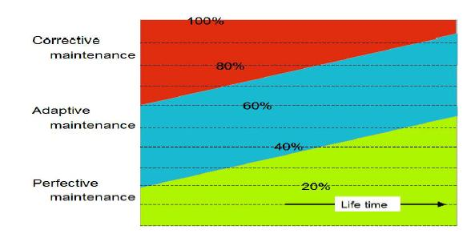

Mantención del Software
A diferencia de la música y los libros, que permanecen invariables en el tiempo, es muy poco el software que no cambie en el tiempo. Es muy probable que, en la medida que pase el tiempo, el software adquiera mayor valor.
Efectivamente, mediante mejoras continuas, personalizaciones, mantenciones, nuevas características, los programas van adquiriendo mayor valor para sus usuarios.
Los mecanismos de cálculo de la depreciación de tangibles e intangibles asumen que los bienes pierden valor por el uso en el tiempo. Sin embargo, el software bien mantenido y en uso activo tenderá a ganar más valor.
Mejora continua
La clave para que el software siga adquiriendo valor está en su continua mejora, la que se traduce en la mantención del software. Esta mantención ha sido clasificada en 3 categorías:
-
Mantención Correctiva. Un aspecto fundamental para mantener a los clientes felices es corregir los bugs a tiempo. Si no se responde rápidamente a estos requerimientos es muy probable que se busquen alternativas, o que el software deje de usarse.
-
Mantención Adaptiva. Tiene que ver con los ajustes que se deben hacer al software cuando hay cambios en el entorno de operación de este. Por ejemplo, cuando aparece un nuevo browser, o sistema operativo. También se hace este tipo de mantención cuando hay cambios en la legislación, nuevas ordenanzas gubernamentales, nuevos impuestos, etc. Mucho software administrativo y de negocios considera la adaptación periódica entre sus costos.
-
Mantención Perfectiva. Incluye mejoras en el desempeño, para asegurar el escalamiento en la medida que aumenta la demanda.El objetivo de la mantención perfectiva permite que el software funcione mejor, en este proceso se agrega nuevas funcionalidades, pero no tantas como para que se convierta en un nuevo producto.
De acuerdo a diversos estudios se sabe qe un 10% de los esfuerzos de mantención se gastan en la corrección de bugs, principalmente en los periodos iniciales de puesta en marcha del software. La mantención adaptiva concentra entre un 15% y un 50% de los costos del software durante su ciclo de vida, y la mantención perfectiva representa alrededor del 50% promedio de los costos del software.

El valor de la mantención
Hay una regla que dice: “El precio del software para la misma funcionalidad es constante, aunque se hagan mejoras”. [1]
Efectivamente, si un proveedor de software decide subir el precio de su producto, sin agregar nuevas características promueve la aparición de imitadores. Mientras que manteniendo un precio bajo se desincentiva la entrada de nuevos competidores.
Sin embargo el costo de mantención del software es importante. Es importante notar que los costos de resolver errores normalmente son asumidos por el desarrollador, mientras que la mantención adaptiva y perfectiva es asumido normalmente por los usuarios.
Un desarrollador de software debe considerar los costos de mantención como parte de su modelo de negocio. Sin mantención, el software va disminuyendo su valor percibido. Para compensar estos costos, es habitual ofrecer el servicio de mantención, mediante contratos que pueden representar un 15% del costo inicial del software o del valor de las licencias.
En un próximo artículo veremos como podemos valorizar el software, pero es importante tener claro cómo considerar la mantención en el aumento del valor de propiedad intelectual del software.